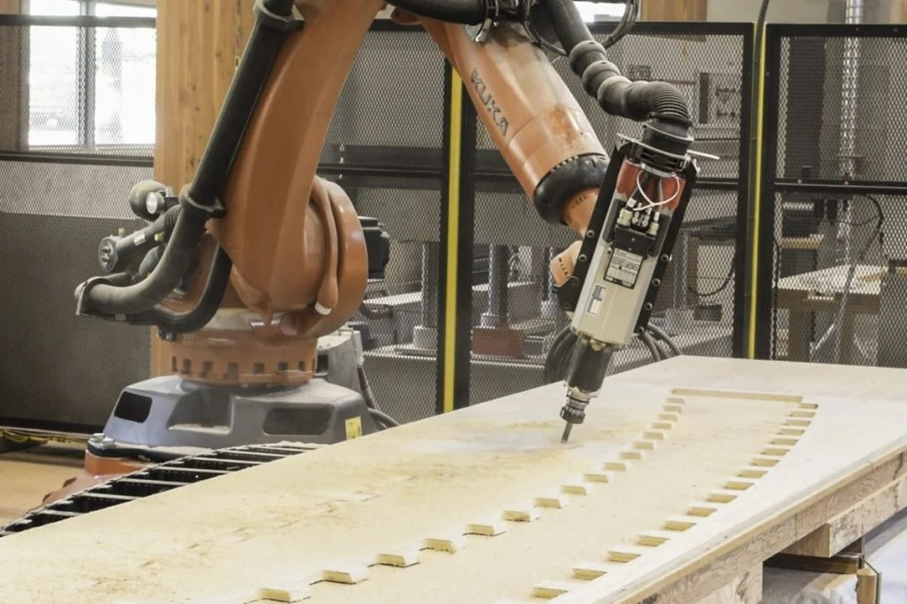
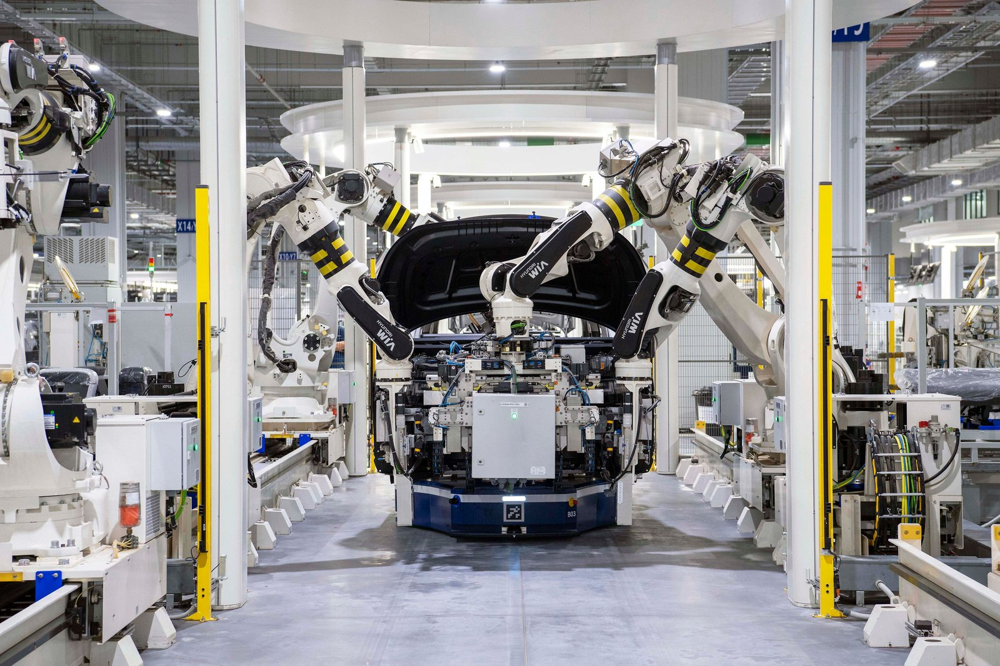
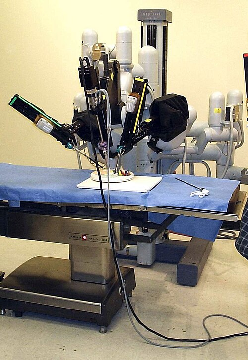
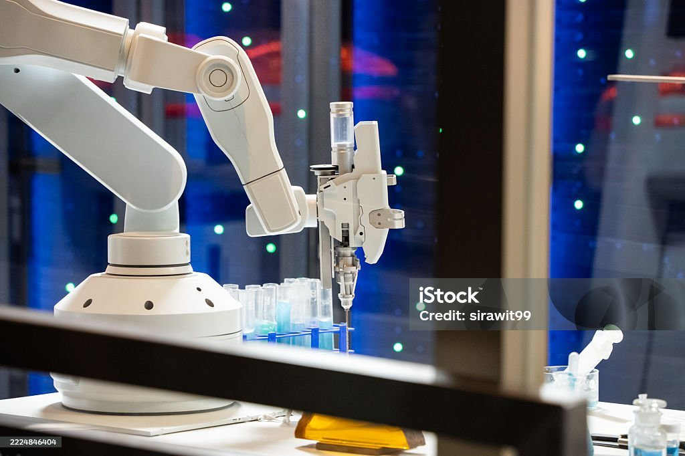
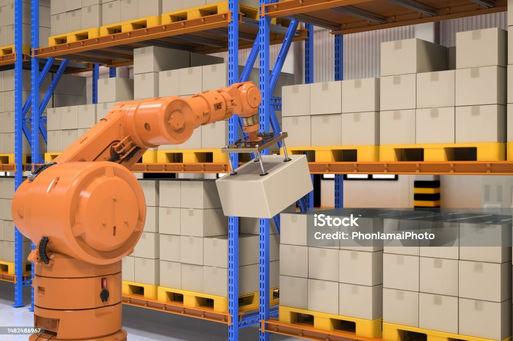
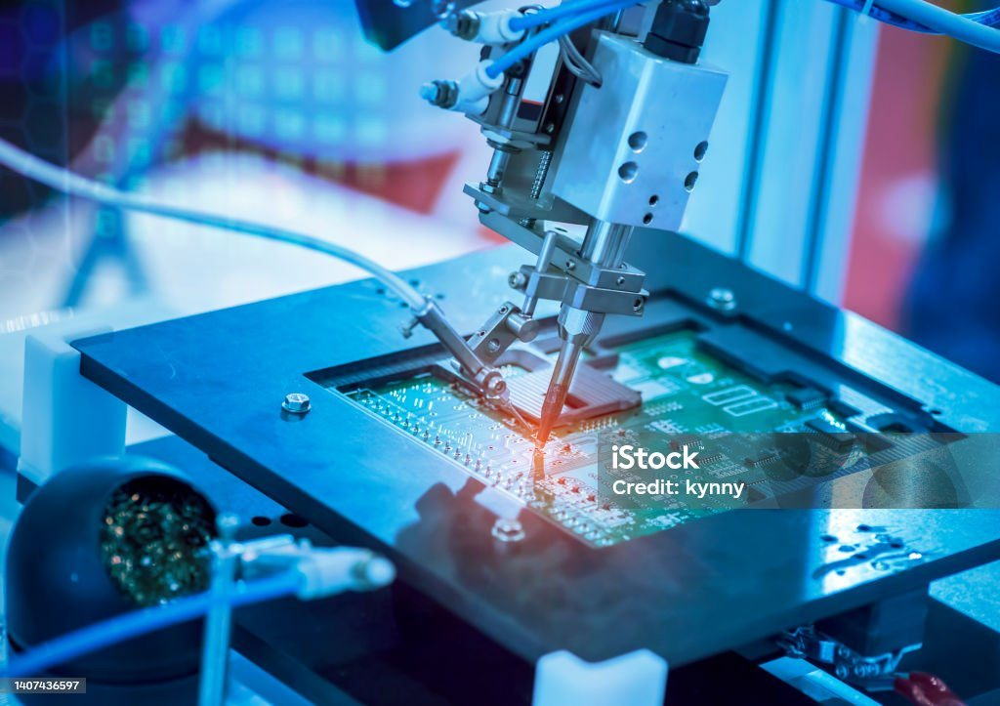
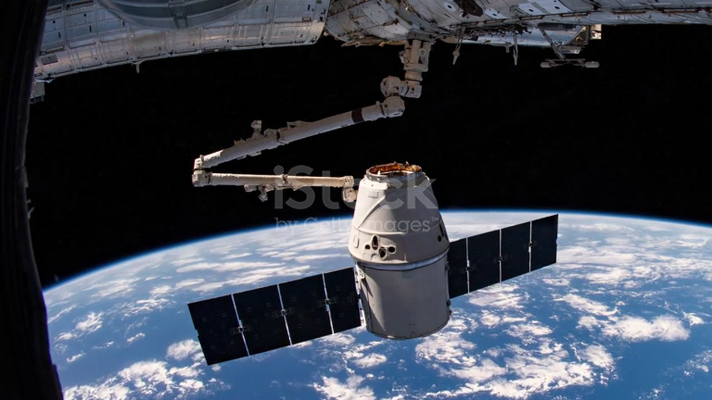

Cada giro, calculado.
Seis articulaciones coordinadas por un controlador que corrige su posición mil veces por segundo. El resultado: movimientos suaves que se repiten igual, la primera vez y la diez mil.
Programable por trayectorias o por aprendizaje manual.
Especificaciones
Y esto no es ciencia ficción
Esta tecnología ya trabaja
en todo el mundo.
Lijar, fresar, repetir.
En la industria de la madera, los brazos robóticos lijan, pulen y fresan piezas con una presión constante que cuesta sostener a mano durante horas, y sin respirar el polvo. Así se trabajan hoy sillas, mesas y tableros, una tarea que reconoce cualquier mueblería, como las que trabajan el algarrobo en nuestra zona. Por eso nuestro brazo lleva su nombre científico: Prosopis.
- Lijado
- Fresado
- Pulido

Una línea de montaje que nunca para.
Desde 1961, cuando un brazo Unimate empezó a trabajar en una planta de General Motors, la industria automotriz es una de las que más robots usa: sueldan, pintan y ensamblan carrocerías con la misma precisión en el auto número uno y en el diez mil.
- Soldadura
- Pintura
- Ensamble

Del quirófano al laboratorio.
El sistema quirúrgico da Vinci es el ejemplo más conocido: el cirujano maneja desde una consola brazos que sostienen los instrumentos y la cámara, y opera con incisiones mínimas. En los laboratorios, otros brazos manipulan tubos y pipetas con una precisión que se repite igual en cada muestra.
- Cirugía con sistema da Vinci
- Incisiones mínimas
- Automatización de laboratorio


Cajas que se mueven solas.
En los centros de distribución, los brazos clasifican, apilan y paletizan paquetes durante todo el día, y trabajan junto con robots móviles que llevan la mercadería de un lado a otro.
- Clasificación
- Paletizado
- Picking

Piezas del tamaño de un grano.
Los celulares y las computadoras se arman con brazos que colocan componentes diminutos y atornillan con una precisión que una mano no sostiene durante horas.
- Montaje de placas
- Atornillado
- Inspección

Un brazo a 400 km de altura.
El Canadarm2 de la Estación Espacial Internacional captura naves de carga, mueve módulos y asiste a los astronautas en sus caminatas espaciales.
- Captura de naves
- Mantenimiento
- Asistencia a astronautas

Y este es el nuestro


Mirá cómo trabaja.
Tomar, girar, soltar. Sin pausas, sin cansancio.
Gracias.
Prosopis-6 · Muestra de brazo robótico